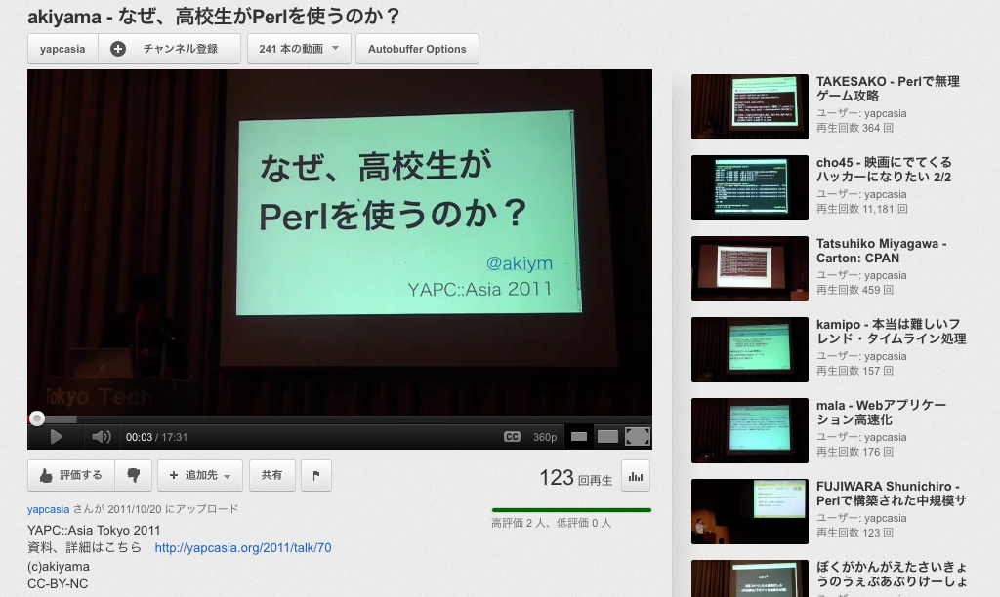
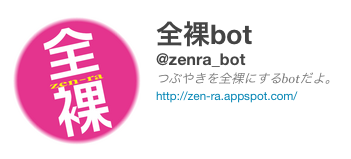

Hokkaido.pmの皆様、本当にありがとうございました

つぶやきを全裸にしてくれる(自動で)
自動でやってくれるのはとても便利
自動でいろいろやってくれるものを作ってみます
今回はbotを作るのにAnySanというモジュールを使ってみます
% cpanm AnySan
AnyEvent をベースとしたリアルタイミングメッセージング用の bot を簡単に作る為のツールキット
AnyEvent をベースとしたリアルタイミングメッセージング用の bot を簡単に作る為のツールキット
例: #hokkaidopm が含まれているツイートを非公式RTするbotを書く
基本的にはこんな感じ
use strict;
use warnings;
use AnySan;
use AnySan::Provider::Twitter;
my $config = +{
consumer_key => '',
consumer_secret => '',
token => '',
token_secret => '',
};
my $twitter = twitter
%$config,
method => 'filter',
track => '#hokkaidopm';
AnySan->register_listener(
hokkaidopm => {
event => 'timeline',
cb => sub {
my $receive = shift;
...
},
},
);
AnySan->run;
AnySan->register_listener(
hokkaidopm => {
event => 'timeline',
cb => sub {
my $receive = shift;
return if $receive->message =~ /^RT\s+/;
$receive->send_reply(sprintf 'RT %s: %s', $receive->from_nickname, $receive->message);
},
},
);
ほかにも
IRCはあまり使っていません。。
IRCのほかによく使うものといえば…
Skype
AnySanはSkypeに対応していません
今回はAnySanでSkype botを書けるようにしてみます
SkypeのAnySan::Provider::を書く
CPANで「Skype」を検索してみる
Skypeは少し複雑でプラットフォームごとに違いがある
マルチプラットフォームに対応しているモジュールが欲しい
注意: Skype for Macに対応していません
Skype::Anyを使って
AnySan::Provider::Skypeを書きました
基本的にはこんな感じ
use strict;
use warnings;
use AnySan;
use AnySan::Provider::Skype;
my $skype = skype;
AnySan->register_listener(
url => {
event => 'chatmessage',
cb => sub {
my $receive = shift;
...
},
},
);
AnySan->run;
例: URLを貼りつけたらすぐにそのタイトルを教えてくれるbotを書く
use strict;
use warnings;
use AnySan;
use AnySan::Provider::Skype;
use LWP::UserAgent;
use URI::Find;
my $ua = LWP::UserAgent->new;
my $finder = URI::Find->new(sub {
my $url = shift;
my $res = $ua->get($url);
return $res->code unless $res->is_success;
my ($title) = $res->decoded_content =~ m!<title>(.*)</title>!i;
return $title;
});
my $skype = skype;
AnySan->register_listener(
url => {
event => 'chatmessage',
cb => sub {
my $receive = shift;
my $message = $receive->message;
if ($finder->find(\$message)) {
$receive->send_reply($message);
}
},
},
);
AnySan->run;
Skype::Anyはもう少ししたらGithubにあげます
ありがとうございました